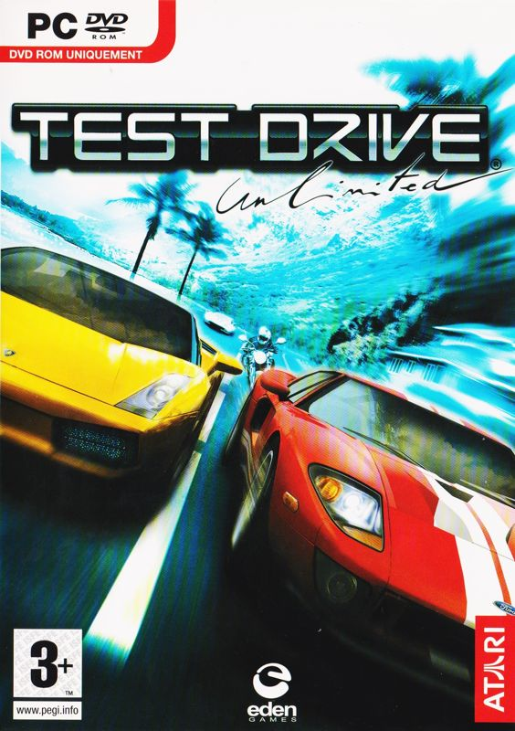
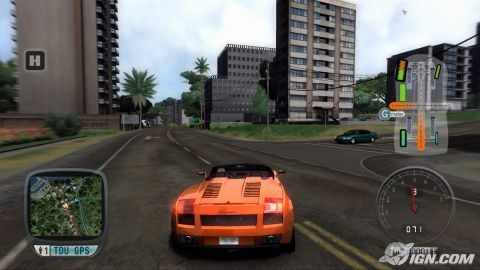
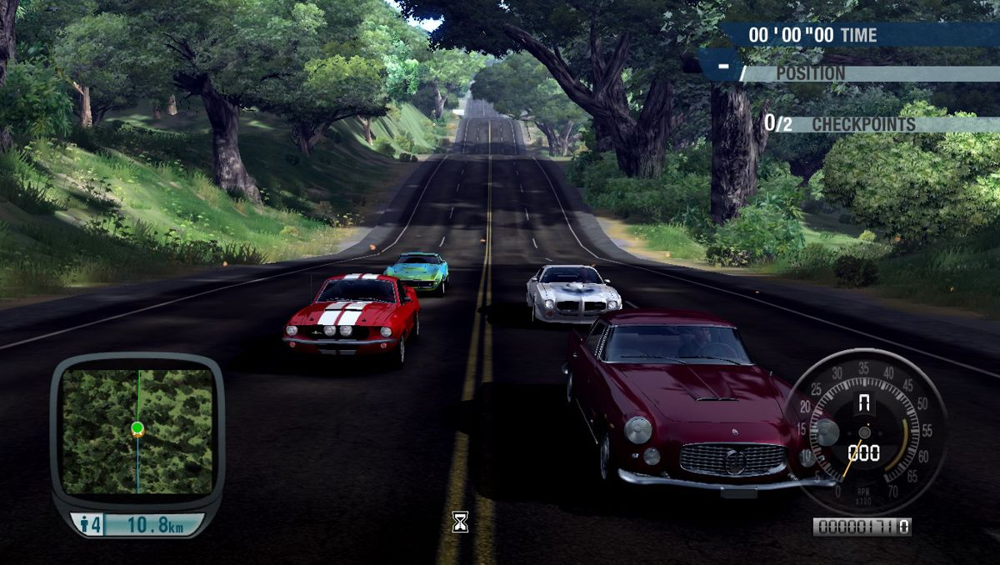
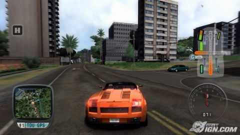
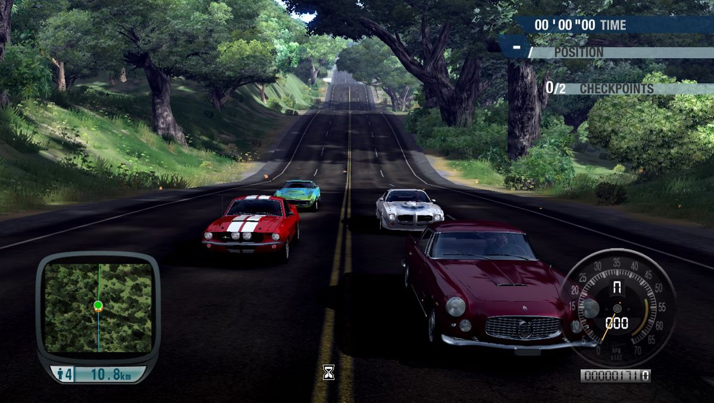

Play date: 2007
Developer: Eden Games
Publisher: Atari
Memo: girlish jaguar ai
Description: TrackMania is a modern version of Stunts, using basic controls and offering racing courses with tricky sections including loops, corkscrews, turbo blocks and huge jumps that require technical skill. In the single player mode, you can practice on 90 tracks, divided over three skills levels. Each race is associated with three time standards to be met to win a bronze, silver or gold medal. There is also a hot-seat multiplayer option where up to eight players can race against the time or with only one try.
 
